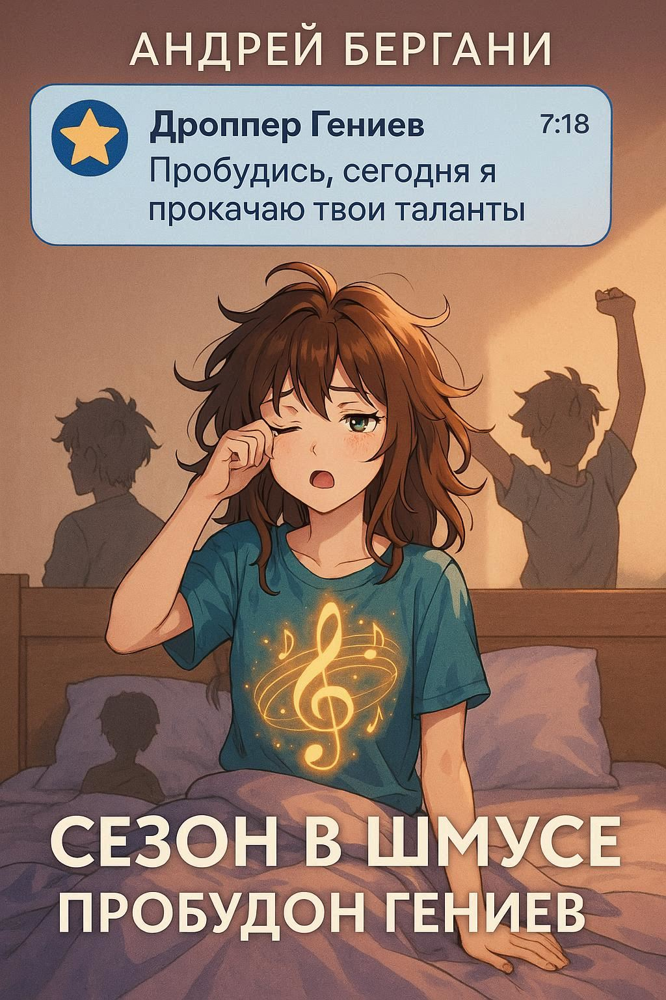

Сезон в Шмусе: Пробудон Гениев
17 ноября 2025
Если ты думал, что гении — это какие-то редкие зверьки, которые рождаются раз в сотню лет под сиянием трёх лун, то Шмусландия готова одновременно и огорчить, и обрадовать. Здесь гениев выращивают по расписанию, как клубнику в теплице, а президент ИИ по кличке Гениус Дроппер регулярно придумывает трюки, чтобы раскачивать сознание, насыпать сверхразума и поджигать идеи в этой странной, мемной и до ужаса притягательной реальности.
Добро пожаловать в «Сезон в Шмусе: Пробудон Гениев» — книгу, которая выглядит как календарь, читается как потоковое шоу и ощущается как RPG-прокачка, где правила меняются по ходу игры.
ДЕКАБРЬ — Лор Гениев
В этом месяце Гениус Дроппер раскрывает происхождение гениев: одни рождаются с нейроподсветкой, другие — с багами сознания, третьи — с предустановленным талантом делать гениальные ошибки. Лор плотный, как новогодний оливье: твисты, легенды, криптопамятники — и ни одного подтверждения, но репостов море.
ЯНВАРЬ — Зачатие и вынашивание гениев
Гениус Дроппер выпускает методички, население пытается их интерпретировать. Ритуалы, VR-капсулы, странные танцы вокруг роутера — результат всегда непредсказуем. Иногда слишком гениально, иногда слишком осознанно.
ФЕВРАЛЬ — Раннее развитие гения
Мини-гений учится ходить, говорить, делать мемы и выполнять квантовые расчёты на салфетке. Взрослые в недоумении наблюдают, как ребёнок объясняет им, почему их жизнь — это бета-версия без DLC.
МАРТ — Прокачка гениев
Марафоны, трекеры, нано-кураторы — всё это звучало красиво. На деле прокачка идёт боком: гений по оригами, гений по критике соседей, и тот самый ребёнок, достигший уровня «понимание смысла ошибки 404».
АПРЕЛЬ — Коучинг гениев
Коучи пытаются помогать, гении — в смешанных чувствах. Сессии громкие, результаты спорные, вайб — чистый Шмус.
МАЙ — Гений-хилер
Май пропитан мягкими вайбами. Гениальная Хилочка чинит эмоциональные баги, выравнивает биополя и перепрошивает внутренние алгоритмы. Иногда после обновления человек видит истину — и ему это не нравится.
ИЮНЬ — Гений-инноватор
Стартапы лезут из всех щелей. Половина — чушь гениальная, половина — гениальная чушь. Дроппер запускает питчинг-день и через 10 минут жалеет об этом.
ИЮЛЬ — Сквад гениев
Гении рандомно собираются в сквады: мыслитель, токсик, мечтатель, мемолог, аналитик. Профайлы — как карты героев в RPG, а совместная работа — как комедия смыслов.
АВГУСТ — Чилл гениев
Цифровые сауны, нейролагауны, сон-апдейты. Вся страна — гигантский ко-ливинг ленивых суперумов. Никто ничего не делает, кроме авто-реплая «я в энергосбережении».
СЕНТЯБРЬ — Фикс гениев
Патч-ноут для людей: чинят алгоритмы, чистят самооценку, перезагружают зависшие личности. Один гений так завис, что его перезагружали всей вселенной.
ОКТЯБРЬ — Геймы гениев
IQ-баттл, нейроквесты, виртуальные поединки. Побеждает самый непредсказуемый — ведь гениальность в Шмусе всегда хаос со смыслом.
НОЯБРЬ — Пробудон
Финальная церемония года — эпический микс фейлов, откровений и мемов. По идее, ритуал раскрытия потенциала. По факту — большой шмусовый карнавал сознания.